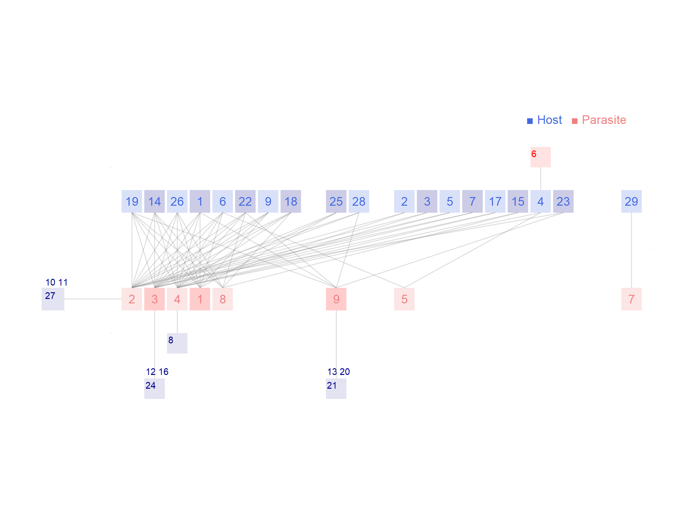

Network: RA_HP_043

Host 1 Amalaraeus.penicilliger, 2 Amphipsylla.anceps, 3 Amphipsylla.asiatica, 4 Amphipsylla.dumalis, 5 Amphipsylla.kuznetzovi, 6 Amphipsylla.primaris, 7 Amphipsylla.rossica, 8 Amphipsylla.schelkovnikovi, 9 Callopsylla.caspia, 10 Ctenophthalmus.arvalis, 11 Ctenophthalmus.breviatus, 12 Frontopsylla.elata, 13 Frontopsylla.elatoides, 14 Frontopsylla.ornata, 15 Frontopsylla.protera, 16 Hystrichopsylla.talpae, 17 Leptopsylla.nana, 18 Megabothris.rectangulatus, 19 Neopsylla.mana, 20 Neopsylla.pleskei, 21 Neopsylla.setosa, 22 Neopsylla.teratura, 23 Oropsylla.silantiewi, 24 Palaeopsylla.soricis, 25 Paraneopsylla.tiflovi, 26 Pectinoctenus.nemorosa, 27 Pectinoctenus.pectiniceps, 28 Rhadinopsylla.li, 29Tarsopsylla.octodecimdentata
Parasite
1 Alticola argentatus, 2 Apodemus uralensis, 3 Clethrionomys centralis, 4 Cricetulus migratorius, 5 Ellobius tancrei, 6 Microtus oeconomus, 7 Sciurus vulgaris, 8 Sicista tianshanica, 9Spermophilus relictus
Hadfield JD, Krasnov BR, Poulin R, Shinichi N (2013) A tale of two phylogenies: comparative analyses of ecological interactions. The American Naturalist 183(2): 174-187 Terskey Alatau